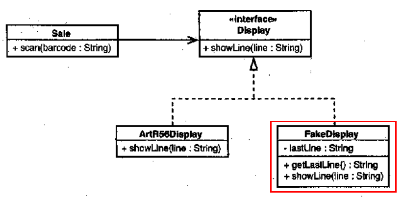
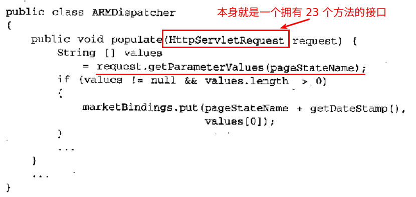
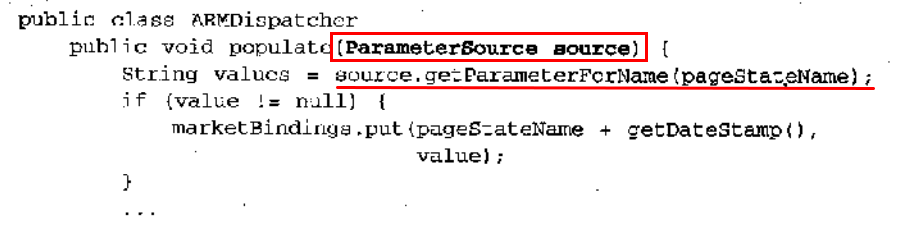
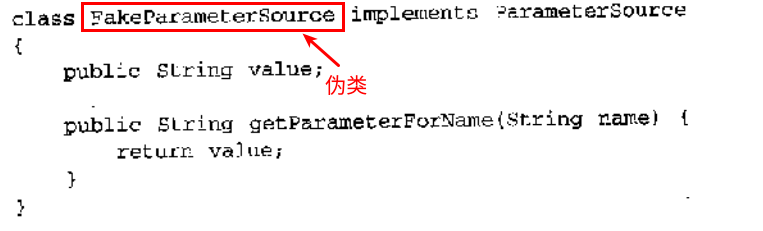
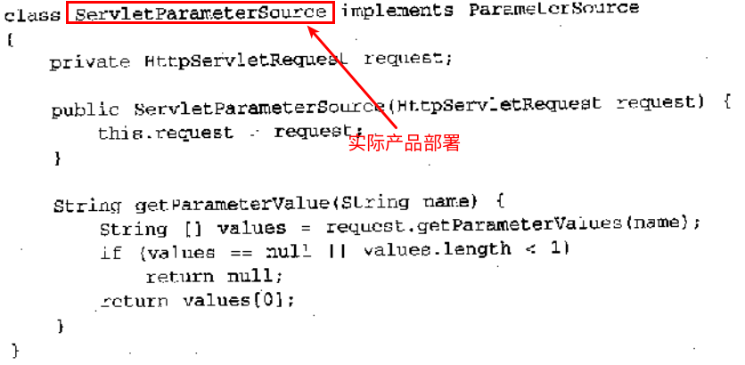
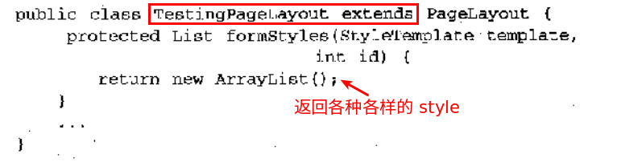

JUnit
添加依赖:
|
|
Annotation to make a private method public only for test classes
|
|
The common way is to make the private method protected or package-private and to put the unit test for this method in the same package as the class under test. Guava has a @VisibleForTesting annotation, but it’s only for documentation purpose.
If your test coverage is good on all the public method inside the tested class, the privates methods called by the public one will be 自动测试 since you will assert all the possible case.
The JUnit Doc says:
Testing private methods may be an indication that those methods should be moved into another class to promote reusability. But if you must… If you are using JDK 1.3 or higher, you can use 反射 to subvert the access control mechanism with the aid of the PrivilegedAccessor. For details on how to use it, read this article.
Consider using 使用接口暴露 API 方法, using factories or DI to publish the objects so the consumers know them only by the interface. The interface describes the published API. That way you can make whatever you want public on the implementation objects and the consumers of them see only those methods exposed through the interface.
Rules
Rules are used to 添加额外功能 which applies to 所有测试 within a test class, but 以一种更加通用的方式.
For instance, ExternalResource executes code before and after a test method, without having to use @Before and @After. Using an ExternalResource rather than @Before and @After gives opportunities for 更号的代码复用; the same rule can be used from two different test classes.
|
|
Every time the above test method is executed, a temporary folder is created and 方法执行完就会自动删除. This is an example of an out-of-box rule provided by Junit.
官方示例/提供的 Rules 请参考: Rules-Wiki
mockito
如何 mock 一个 HostProvider:
|
|
使用 org.mockito.mock 方法来 mock 它:
|
|
也可以 mock 具体的类 (如 Zookeeper.java) :
|
|
@RunWith
默认的 Runner 是 BlockJUnit4ClassRunner，使用 @RunWith 可以显示声明e当运行测试的时候需要 invoke 的类。
如何测试没有异常抛出
如果异常抛出的话，那么测试会自动失败
好的单元测试应具有的品质
- 运行快
- 能够帮助我们定位问题所在
一个需要耗时十分之一秒才能执行完的单元测试就已算是一个慢的单元测试了。
下面这些测试不是单元测试:
- 跟数据库有交互
- 进行了网络通信
- 调用了文件系统
- 需要你对环境做特定的准备 (如编辑配置文件) 才能运行的
当一个类直接依赖 (构造器依赖) 某些难以在测试中使用的东西 (DBConnection, InvoceUpdateServlet) 时，这个类就是难以修改和处理的。
|
|
对于某个特定的类来说，不改变它就难以为它编写测试的话，那么转而去测试使用它的那些类往往会简单一些。我们可以解开 InvoiceUpdateResponder 对 InvoiceUpdateServlet 的依赖：只需将 InvoiceUpdateResponder 真正需要的东西传给它就行。同样我们也可以解开 InvoiceUpdateResponder 对 DBConnection 的依赖，只需要引入一个接口 IDBConnection，并将 InvoiceUpdateResponder 改为使用该接口即可。
实际上，在没有测试保护的情况下进行上述的重构依然是安全的。
依赖性往往是进行测试的最为明显的障碍。表现在两个方面:
- 难以在测试用具中实例化目标对象
- 难以在测试用具中运行方法
当 scan 被调用的时候，Sale 对象需要在收银机的显示器上显示出被扫描商品的名称及价格:
|
|
假如我们想测试一下 Sale 对象能否在显示器上正确显示商品的名称及价格，那么我们该怎么做？ 倘若我们能够找到实际刷新的那行代码…
|
|
如此改动一番之后，我们就可以进一步得到如下设计:

我们的测试类就可以这么写:
|
|
如果要编写许许多多的伪对象的话，建议你考虑一种更高级的伪对象，即所谓的 Mock Object。
库依赖问题
尽量避免在你的代码中到处出现对库的直接调用。你可能会觉得永远也不会去修改这些调用，但最终可能只是自欺欺人。
应用毫无架构可言
通常架构师的任务就是掌控全局，为团队做出能够维持系统整体架构不变的决策。有一个特别需要注意的地方，那就是架构师必须得跟团队的其他成员打成一片，否则代码就会逐渐偏离主航向。
要想发挥架构师的最大作用，关键还是要看团队的成员是否能够清楚架构师到底意味着什么，并能够感到架构师是跟他们休戚相关的一个角色。每一个接触代码的人都应该了解架构，如果团队里每个人都有共同的想法，那么整体的力量就会大大增强。如果你有一个 20 人的团队，其中只有 3 个人了解架构细节，则要么这 3 人需要多做额外的工作来让其余 17 人都能够跟上，要么就等着其余 17 人因对大局不熟而犯错误吧。
我们怎样才能获得读一个大型系统的整体认识呢？方法很多。Serge Derneyer、Stephane Ducasse 和 Oscar M. Nicrstrasz 合著的 《Object-Oriented Reengineering Patterns》 一书中就包含了一组用来解决这些问题的技术。还有几个相当强大的技术，如果你常在团队里实践这些技术，就会发现它们能够使你的团队始终保持对架构的关注，对于架构的维持来说，或许没有什么比这个还要重要的了。
需要修改大量相同的代码
面对代码重复，其实只需要从删除小块重复代码开始就行。
|
|
解依赖技术
将类解依赖以使它们能被置于测试之下的技术:
- 接口提取
在对方法作改动时有时会发现难以创建所需的参数，又比如需要测试某方法对其某个参数的影响。在参数依赖问题上，接口提取往往是不二之选。

将参数类型外覆起来，从而完全解除对 API 接口的依赖:

接口应该传达职责而非实现细节，这样的接口令代码易于阅读和维护。


遗留代码基中的一个普遍问题就是抽象层次不够。系统中最重要的代码往往跟底层 API 耦合在一起。
- 分解出方法对象
- 封装全局引用
如果若干个全局变量总是被一起使用一起修改，则它们应该属同一个类。
- 暴露静态方法
假如你有一个方法，该方法不使用实例变量或其他方法，就可以将它设置成静态的。
- 提取并重写调用


- 实现提取
提取一个接口，却发现我想给它取的名字已经被当前类给占用了。
- 接口提取
在编写新类时，最简单的事情莫过于起个简单的名字了，即便是对于大型的抽象也是如此。例如，如果我们正在编写一个 account 包，则我们可以从一个就叫 Account 的类开始。然后开始编写测试添加新的特性，随着系统的增长，迟早你会想要把 Account 做成一个接口。这时可以在 Account 下创建一个派生类，并将 Account 中的所有数据方法都转移到它里面，将 Account 架空成一个接口，这么做的好处就是你无需将代码中所有引用 Account 的地方修改成引用新的接口。
许多时候，在得到足够的测试覆盖之前，最好避免大规模的改动。